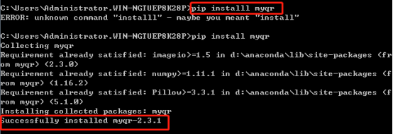
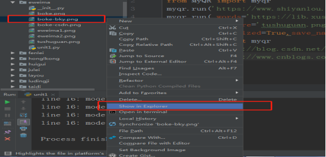
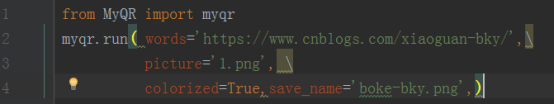

分享一个简单快捷的二维码制作，Python实现。
1.安装准备
已安装的Python+Pycharm的计算机。本人win7+Python3.6+Pycharm
2.库包下载安装
Python二维码制作需要第三方库包myqr。
安装方法：cmd命令行直接安装：pip install myqr

（1）首先制作一个简单的二维码，以我的博客网址为例。
博客网址：https://www.cnblogs.com/xiaoguan-bky/
Pycharm中创建工程，新建.py文件制作源码如下：
运行无误后，生成的二维码将保存在原项目文件路径下，同.py文件路径。可直接在项目栏查看，选择右键打开文件位置。

生成二维码效果：
（2）也可制作含有自己个性色彩的二维码，如添加背景图案。Picture对应背景图片放在项目文件下，即和.py放一起。源码如下：

生成二维码效果：